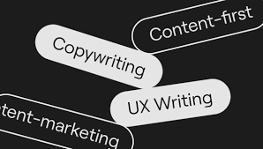
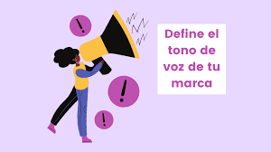
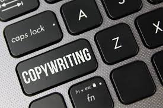

Práctica 01
- ¿Qué es el copywriting y por qué es importante en el diseño web?
El copywriting de un sitio web son las palabras que aparecen en la página de inicio, la página de servicios, la página de productos, la página de destino y la página de ventas . No debe confundirse con la redacción de contenido, el copywriting de un sitio web se basa en la acción. Las palabras de su sitio web tienen la función de convertir a los visitantes al hacer que realicen la acción deseada.
- ¿Cuál es la diferencia entre copywriting y UX writing?
En el copywriting reina el ingenio y la creatividad para que los mensajes resulten lo más atractivos posible. Por otro lado, en el UX Writing se busca la concisión, la utilidad y la claridad en los mensajes para que un producto digital sea fácil de usar

- ¿Cómo influye el tono y la voz de la marca en el copy de una página web?
si tu marca tiene un tono de voz divertido y juvenil, atraerá a una audiencia que busque contenido creativo y de entretenimiento. Por otro lado, si el tono de voz de la marca es más serio y profesional, atraerá a una audiencia que busque información clara y concisa.

- ¿Qué técnicas de copywriting pueden mejorar la conversión en una web?
mientras más escribes, mejor lo haces, aunque muchas veces no te des cuenta. Convertir el copywriting en un hábito te ayudará a notar errores comunes, crear tus propios trucos y, en general, a que la redacción te resulte más fácil.
- ¿Cómo se equilibra el texto con el diseño visual para mejorar la experiencia del usuario?
Evita bloqueos de textos largos y derja suficiemte espacio entre parrafos para facilitar la lectura

- ¿Cuáles son los errores más comunes en el copy de una página web y cómo evitarlos?
El copywriting consiste en escribir textos publicitarios o copy con el fin de que el lector realice cierta acción, ya sea suscribirse a una lista de correo, descargar un juego o darle “me gusta”. Es la herramienta clave a la hora de captar nuevos clientes online y también fidelizar a los antiguos. Si un buen copywriting, es posible que el lanzamiento de tu curso o de tus productos no acabe de ir bien. Por ello hoy analizaremos los 8 errores más comunes a evitar a la hora de hacer copywriting. Veremos en qué nos pueden perjudicar estas incorrecciones y cómo podemos evitarlas.

- ¿Cómo se puede optimizar el copy para mejorar el SEO sin sacrificar la claridad del mensaje
El primer paso para crear un copy efectivo es entender a quién te diriges. ¿Qué le gusta a tu público? ¿Qué tono y lenguaje utilizan? Investigar a fondo a tu audiencia te ayudará a encontrar el equilibrio entre SEO y creatividad. Por ejemplo, si tu público objetivo son mujeres jóvenes interesadas en moda sostenible, puedes usar un tono fresco y natural que refleje sus valores, mientras incorporas palabras clave relevantes para SEO como «moda eco-friendly» o «ropa sostenible». De esta forma, mantienes el interés de tus lectoras y al mismo tiempo mejoras tu posicionamiento en buscadores.
- ¿Qué papel juega el storytelling en el copywriting web?
El storytelling juega un papel crucial en este aspecto, ya que las historias bien narradas mantienen a los usuarios interesados durante más tiempo. Cuando un visitante se siente inmerso en una narrativa, es menos probable que abandone la página rápidamente.
- ¿Cómo adaptar el copy a diferentes formatos y dispositivos (móvil, desktop, etc.)?
Las pantallas móviles tienen menos espacio y más distracciones que las computadoras de escritorio. Eso significa que su copia debe ser clara, concisa y fácil de escanear. Evita frases largas y complejas que puedan confundir o aburrir a tus lectores. Divide tu texto en párrafos cortos y utiliza subtítulos, viñetas y espacios en blanco para que sea más legible. Utiliza la voz activa, las palabras sencillas y el lenguaje positivo para transmitir tu mensaje y tono.

- ¿Cuáles son las herramientas y recursos más útiles para mejorar el copywriting en diseño web?
Para mejorar el copywriting en diseño web es esencial conocer herramientas y recursos que faciliten la creación de contenido persuasivo y efectivo. Entre los más útiles se encuentran los generadores de títulos como Headline Analyzer de CoSchedule que ayuda a crear encabezados atractivos, plataformas de investigación de palabras clave como Google Keyword Planner o Ubersuggest que permiten optimizar el contenido para SEO, y herramientas de análisis de legibilidad como Hemingway Editor o Grammarly que aseguran que el texto sea claro y fácil de entender. Además el uso de bancos de imágenes y recursos visuales como Unsplash o Pexels puede complementar el texto de manera efectiva, creando una experiencia más visual y atractiva. El estudio de casos y análisis de competencia también es un recurso valioso, ya que permite conocer qué funciona en el mercado y qué atrae al público objetivo. Finalmente, mantenerse actualizado con blogs y cursos sobre tendencias de copywriting y UX writing en sitios como Copyhackers o UX Design es fundamental para perfeccionar las habilidades de escritura para la web.